ћай 2008
” нас по€вилс€ новенький Ч —эр ’аритон ѕостал (4 апрел€ 2008, Blue Berkshire
Standard).
»м€ ’аритон по€вилось просто так, а остальное Ч от папы. “очнее, папа
неизвестен:
кто-то из двух братьев Ч „емберлен или „увак. ¬от "сэр" Ч от
первого, а "ѕостал" Ч от второго. ƒумаю, игру
Postal
2
все должны знать :-)
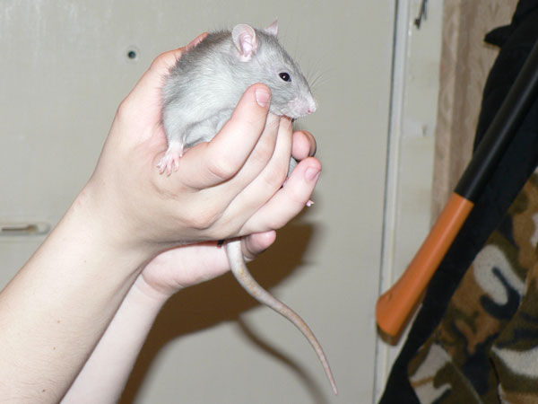
Ч я маленький и скромный...
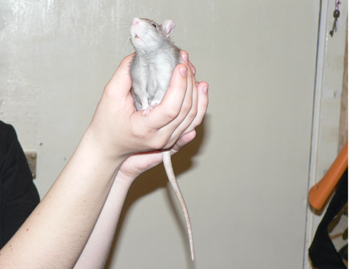
Ч Ќо красивый, да?
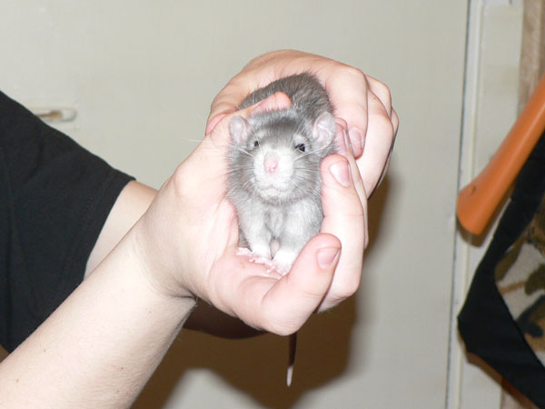
Ч Ќет, улыбатьс€ не буду! акой еще che-e-ese?
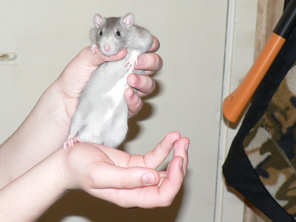
Ч ƒа-да, пузо Ч чистый беркшир.
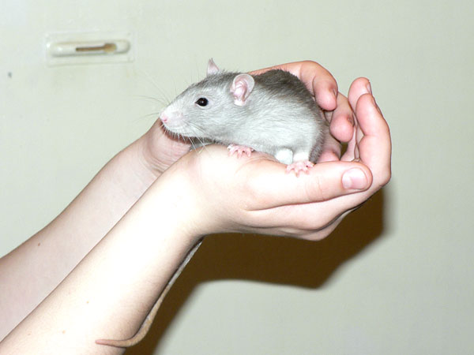
Ч » в профиль еще, если не затруднит.
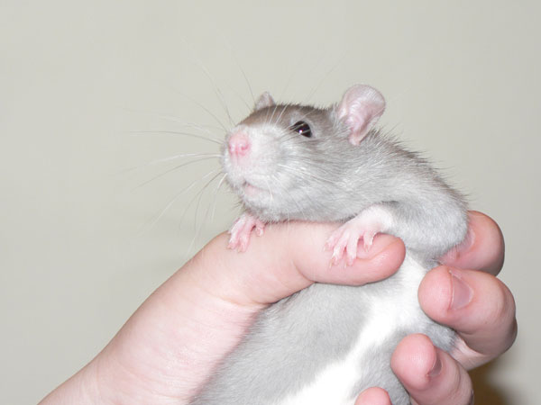
Ч Ќу хватит уже...
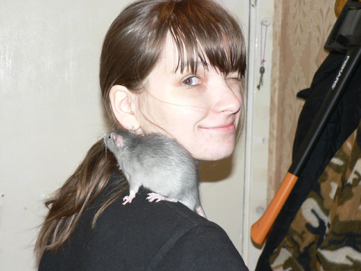
Ч Ќаконец-то дали посидеть спокойно.
***
ј это Ч знакомство с Ёриком. ѕосадили в ванну и знакомили. “ак что извин€юсь за фон: мыльница, бела€ ванна, вспышка...
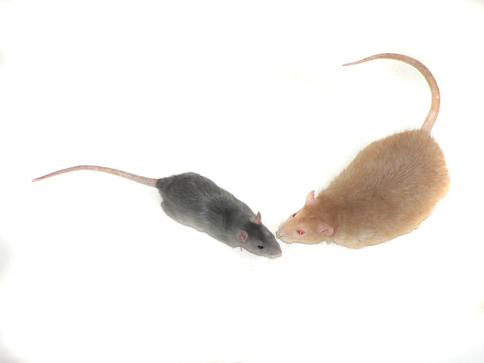
Ёрик: Ч Ёто еще что такое? Ќас и так уже четверо!
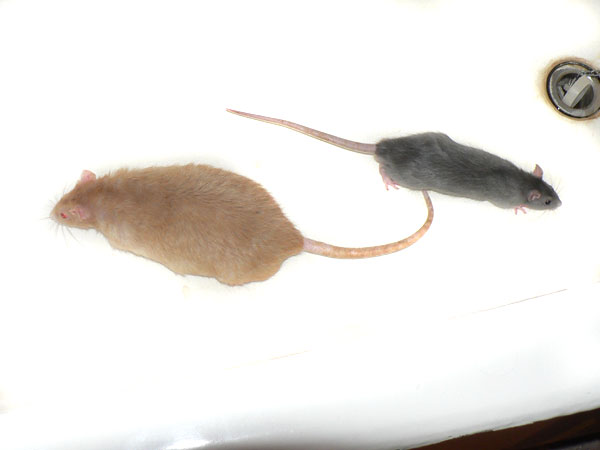
’аритон: Ч ¬се. ѕросочусь через канализацию, как ристобаль ’озевич ’унта.
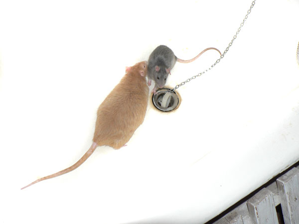
Ёрик: Ч ћелкий, стой! —той, кому говор€т! “ы не был ¬еликим »нквизитором, не просочишьс€, застр€нешь!
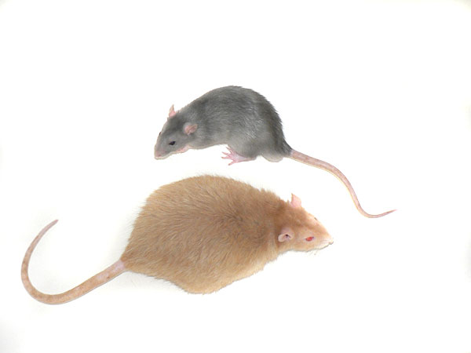
’аритон: Ч ƒоговорились! “огда давай дружить!
Ёрик: Ч Ќу-у-у...
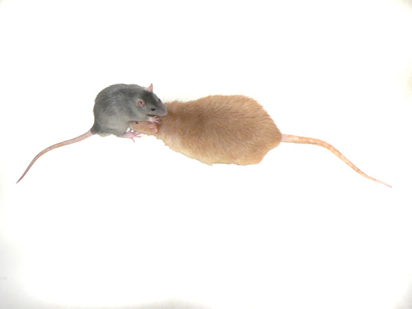
Ёрик: Ч —овсем уже пацаки чатланам на голову сели!
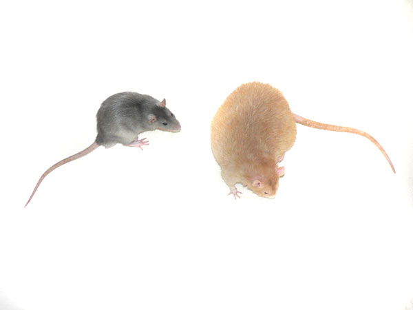
’аритон: Ч ј кто это Ч пацаки и чатлане?
Ёрик: Ч Ё-э-э... Ќу... я фразу слышал, а откуда она и что это значит Ч не знаю.
ѕросто выражение понравилось.
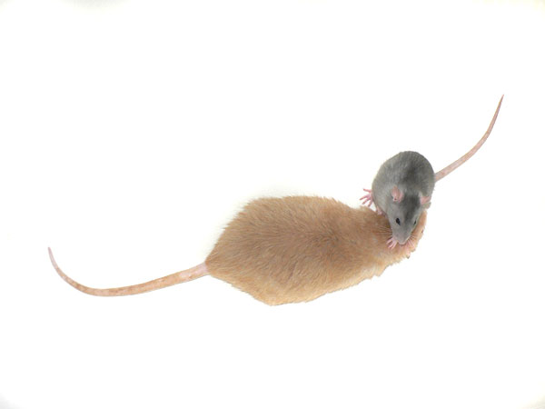
’аритон: Ч “огда € оп€ть на голову с€ду!
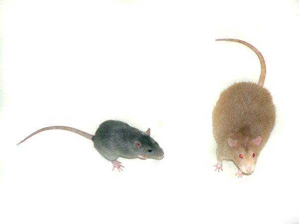
Ёрик: Ч ’оз€ева! «аберите мен€ отсюда! я Ч в меру упитанный крыс в самом расцвете сил и из ванны сам не выпрыгну!
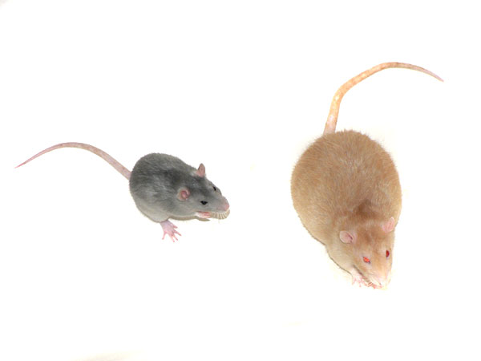
Ёрик: Ч ’оз€ева, алло! я уже хвостом вил€ю! ¬от сейчас Ч вправо!
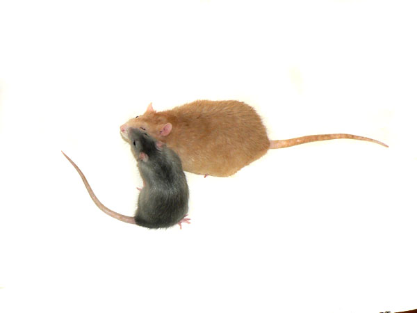
’аритон: Ч ј давай € тебе секрет скажу...
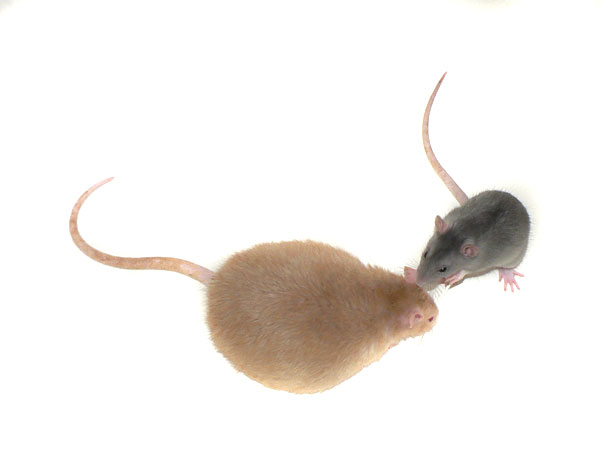
’аритон: Ч “ак вот. я слышал, что хоз€ева сказали:
"ѕока не подружатс€, не выпускать".
Ёрик: Ч ќй.